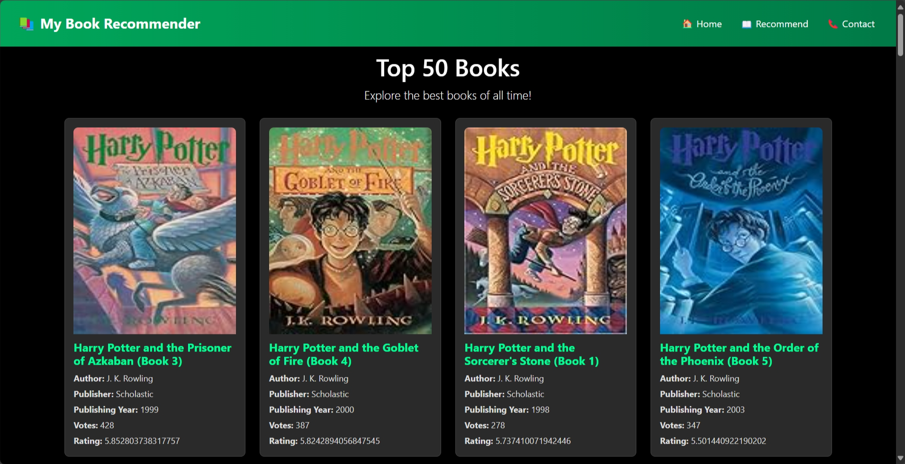

Book Recommendation System

Project Description
The Book Recommendation System is a Flask-based web application that leverages collaborative filtering to provide personalized book recommendations. It features an interactive web interface and detailed book information, including titles, authors, publishers, and cover images.
Features
-
Personalized Book Recommendations:
- Suggests similar books based on user input.
-
Interactive Web Interface:
- Built with Flask for a seamless user experience.
-
Detailed Book Information:
- Displays book titles, authors, year of publication, publishers, and cover images.
Technical Details
-
Backend:
- Built with Flask (Python).
-
Frontend:
- Designed using HTML, CSS, and Bootstrap.
-
Data Handling:
- Uses pandas and NumPy for efficient data processing.
-
Modeling:
- Implements collaborative filtering for recommendations.
How It Works
-
Homepage:
- Displays the top 50 books based on popularity.
-
Recommendation:
- Users can search for a book in the "Recommend" tab.
- The system suggests similar books using precomputed similarity scores.
Installation and Setup
-
Clone the Repository:
$ git clone https://github.com/iamtgiri/Book_Recommendation_System.git $ cd Book_Recommendation_System -
Install Dependencies:
$ pip install -r requirements.txt -
Add Dataset Files:
- Ensure
books.pkl,similarity_score.pkl,popular.pkl, andpt.pklare in the project directory.
- Ensure
-
Run the Application:
$ python app.pyThe app will be live at
http://127.0.0.1:5000/.
GitHub Link
Check out the code and contribute on GitHub:
Book Recommendation System Repository